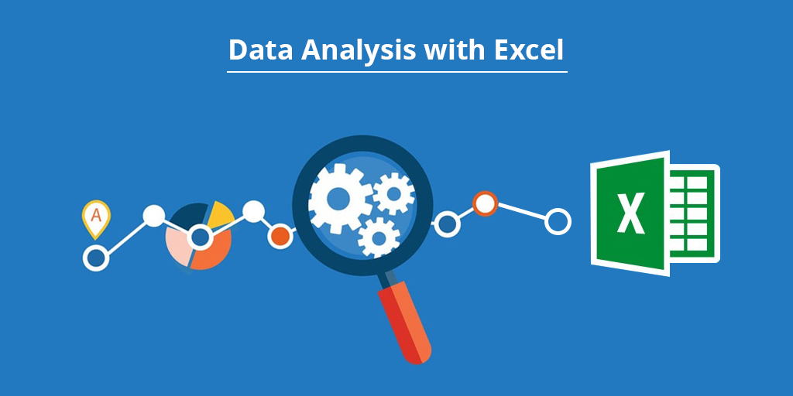

* Experienced Business Analyst with a proven track record of delivering exceptional results in diverse industries using my Data Analysis and Collaboration Skills with analytical thinking and problem solving mindset.
* Proficient in translating complex business requirements into actionable insights, driving strategic decision-making, and optimizing operational processes.
*Skilled in data analysis, process improvement, stakeholder management, and project coordination.
* Strong communication and collaboration abilities, with a keen eye for detail and a passion for driving business growth.
Amazon Pantry
Tool Used: Standard BA Practice | Excel | Word | JIRA | Tableau

• Identified Stakeholders with RACI matrix and defined business requirements, both functional and non-functional
• Created As-Is and Future Process map using flowcharts with wireframes and mock screens
• Applied Techniques such as SWOT & MoSCoW to defined In scope & out of scope for the software
• Created dashboards for senior management to view sales of products to take informed and critical decisions
• Made a product backlog and user stories for the given project with acceptance criteria
Tool Used : Standard BA Practices | Excel | Word | Presentation

•Identified risks in this new feature using the Strategy Analysis
•Identified the Transition State and Future State of WhatsApp Pay and Business Requirements
•Drawn Use Case diagram (UML) and Context diagram
•Created as is and future process maps using flowcharts with Microsoft Visio, Lucid Chart
•Created wireframes and mock screens by prototyping & wireframing techniques using tools like PowerPoint, Word, Balsamiq, InVision Freehand
Tool Used : EXCEL | Regression | Statistical Analysis

•Built a Model to predict restaurant tips given, using data analysis and statistical analysis in Excel.
•Determined missing values and cleaned the data & identified the features that are independent and dependent
•Performed various Regression Statistics and calculated values such as Multiple R, R square, Standard Error, T-Stat and P value
•Calculated Coefficients, ANOVA and the RMSE of the model and successfully predicted and actual tips values.

•Created an interactive floating Dashboard in Tableau for management team for ad-hoc analysis and reporting
•Determined top 5 products and top 5 customers by Sales that are generating the highest revenue as a bar chart
•Visualized Sales vs Profit on a Scatter Plot with Category and Sub-Category breakdown
•Analyzed Sales report for monthly, quarterly and yearly across States & Countries for hidden trends and patterns.
Tool Used : JIRA, Agile, Scrum

•Identified five epics and 15 user stories from the case and Linked the stories to the epics
•Created a Scrum project and Started and complete one sprint
•Entered the backlog (epics, stories and subtasks) in JIRA
•Make a tentative release plan, by assigning the stories to three sprints.
•Identified the regular customers to provide offers
•Analyze the busiest route which helps to increase the number of aircraft required
•Prepared an analysis to determine the ticket sales details
•Create an ER diagram for the given airlines database
•Improved the operability of the company focusing on customer centric and a favorable choice for air travel.